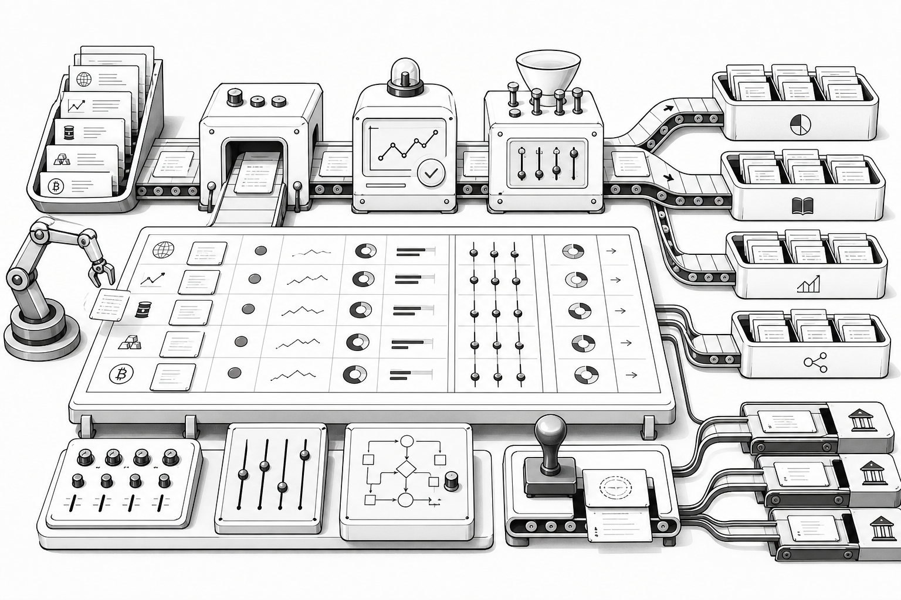

What I built
A trade blotter with intended allocations across funds, books and strategies plus configurable charge, allocation and settlement rules for prime brokers and accounts.
2003
A consolidated web application supporting trade ordering, execution and allocation across multiple asset classes.
A trade blotter with intended allocations across funds, books and strategies plus configurable charge, allocation and settlement rules for prime brokers and accounts.
Designed and developed the platform using Oracle, PL/SQL, HTML, JavaScript and CSS.
Helped automate complex multi-asset trading workflows within hedge funds.
Oracle · PL/SQL · HTML · JavaScript · CSS · Allocation rules · Settlement rules
